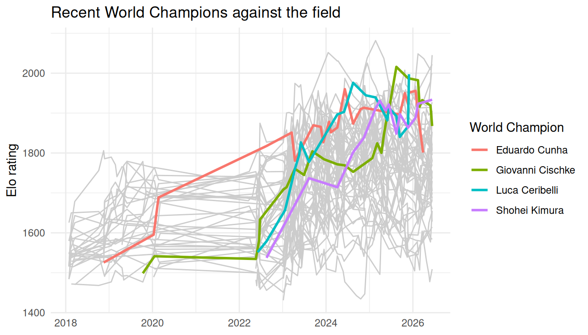

Goal
This guide shows how to turn the Elo rating histories in pokemonvgc into a clear plot that highlights recent World Champions against the rest of the field.
Step 1: Look at the data
pokemon_elo contains one row per player per rated event.
pokemon_elo
#> # A tibble: 2,043 × 4
#> player_id player_name date rating
#> <chr> <chr> <date> <dbl>
#> 1 aditya-subramanian Aditya Subramanian 2018-01-28 1484
#> 2 alberto-lara Alberto Lara 2018-01-28 1580
#> 3 alex-underhill ALEX UNDERHILL 2018-01-28 1484
#> 4 ashton-cox Ashton Cox 2018-01-28 1516
#> 5 carson-confer Carson Confer 2018-01-28 1626.
#> 6 collin-heier Collin Heier 2018-01-28 1580
#> 7 dylan-salvanera Dylan Salvanera 2018-01-28 1517.
#> 8 ellie-homen Ellie Homen 2018-01-28 1516.
#> 9 enrique-grimaldo Enrique Grimaldo 2018-01-28 1549.
#> 10 justin-burns Justin Burns 2018-01-28 1516.
#> # ℹ 2,033 more rowsStep 2: Mark the recent champions
recent_champions is a lookup table, so we use it to flag champions rather than hard-coding their names.
Step 3: Plot champions against the field
Grey lines show the field for context; coloured lines draw attention to the champions.
ggplot(elo_flagged, aes(date, rating, group = player_id)) +
geom_line(
data = filter(elo_flagged, !champion),
colour = "grey80"
) +
geom_line(
data = filter(elo_flagged, champion),
aes(colour = player_name),
linewidth = 1
) +
labs(
x = NULL,
y = "Elo rating",
colour = "World Champion",
title = "Recent World Champions against the field"
) +
theme_minimal()
Step 4: Who is on top now?
recent_players() keeps each established player’s latest rating.
recent_players(pokemon_elo) |>
slice_max(rating, n = 5)
#> # A tibble: 5 × 5
#> player_id player_name date rating events
#> <chr> <chr> <date> <dbl> <int>
#> 1 wolfe-glick Wolfe Glick 2026-06-12 2045. 38
#> 2 eric-rios Eric Rios 2026-06-12 2022. 40
#> 3 paul-chua Paul Chua 2026-05-29 2008 46
#> 4 marco-silva Marco Silva 2026-06-12 1999. 45
#> 5 luca-ceribelli Luca Ceribelli 2025-11-29 1997. 19The 2026 champion does not appear in the plot because the rating snapshot has no history for them. See ?recent_champions.